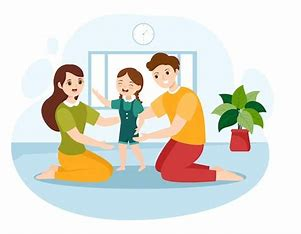

Marcos, de 12 anos, viveu boa parte de sua vida em um abrigo. Com poucas lembranças de sua família biológica, ele carregava a dor do abandono e o medo de nunca encontrar um lar. Muitos adotantes preferiam crianças mais novas, o que o fez acreditar que jamais seria escolhido.
Tudo mudou quando Júlia e Ricardo, um casal de professores em seus 40 anos, decidiram adotar. Eles sempre sonharam em ter filhos, mas, após anos enfrentando dificuldades para engravidar, resolveram abrir o coração para a adoção. Durante o processo, optaram por incluir adolescentes em seu perfil, acreditando que poderiam oferecer amor e estabilidade a alguém que já tivesse enfrentado desafios.
O primeiro encontro foi emocionante. Marcos estava nervoso e desconfiado, mas Júlia e Ricardo o acolheram com paciência e carinho. Aos poucos, eles construíram uma relação baseada em confiança. Hoje, Marcos é um adolescente feliz, apaixonado por esportes e inspirado pelos pais a se tornar professor. Júlia e Ricardo dizem que a presença dele transformou suas vidas. "Marcos nos ensinou a importância de perseverar e acreditar no amor. Ele trouxe alegria para nossa casa e nos tornou uma família completa."
O Reencontro com a EsperançaBeatriz e João sempre souberam que queriam adotar, mas o processo demorou mais do que esperavam. Enquanto esperavam sua habilitação, decidiram participar de grupos de apoio à adoção para entender melhor as necessidades das crianças e adolescentes acolhidos. Foi em um desses encontros que conheceram a história de Ana Clara, uma menina de 7 anos com deficiência auditiva.
Ana Clara era alegre e cheia de energia, mas a dificuldade em se comunicar fazia com que muitos adotantes não a escolhessem. Beatriz e João, tocados pela história dela, começaram a aprender Libras (Língua Brasileira de Sinais) mesmo antes de conhecê-la. Quando o primeiro encontro aconteceu, a conexão foi instantânea.
"Ver a Ana Clara se abrir para nós foi mágico. Ela nos ensinou que o amor não precisa de palavras." Hoje, Ana Clara vive em um lar cheio de amor e brincadeiras. Beatriz e João continuam aprendendo Libras e ajudam a filha a explorar suas habilidades com confiança. Ana Clara, que antes tinha dificuldades na escola, agora é uma das alunas mais participativas de sua turma e sonha em ser professora para ensinar Libras a outras crianças.
 Mais historias